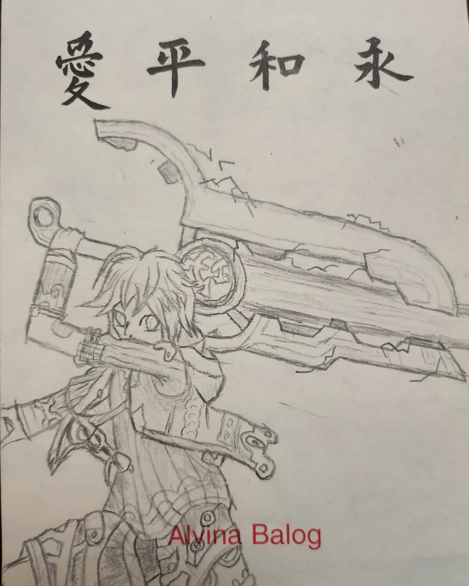

Quién soy
Aquí encontraran mi galeria de arte, algunas son a mano y otras en digtal.
En diversos estilos como Pixel Art, tinta y demás.
Sigo aprendiendo y espero mejorar con el tiempo.
Solo subo contenido hecho a mano por mi, no IA ni de otros artistas.
"PEZ"
Hecho con plumas en un bloc de notas.
"23NV23"
Digital, tipo pixel art, hecho en PAINT.net.
"Warrior of light"
Hecho a lapiz, en el mismo bloc de notas.
Es un personaje de la saga de Final Fantasy.

"Shulk"
Hecho a lapiz, si, es el mismo bloc.
El protagonista de Xenoblade Chronicles.